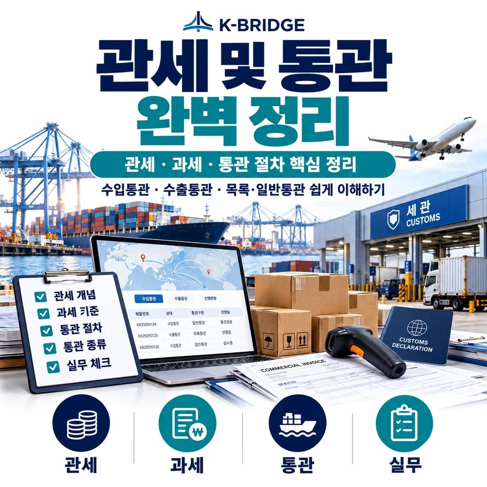
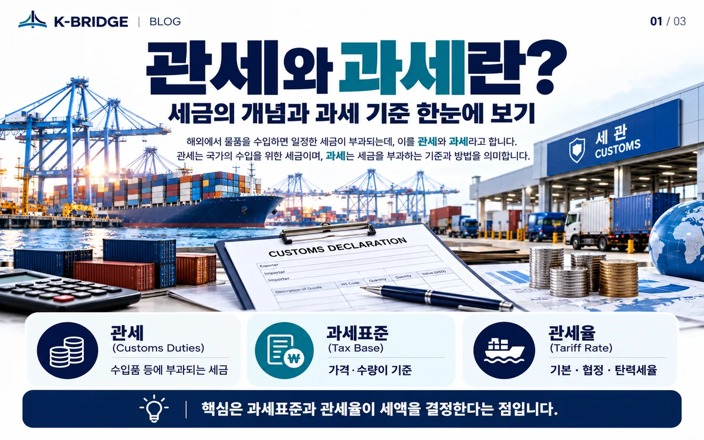
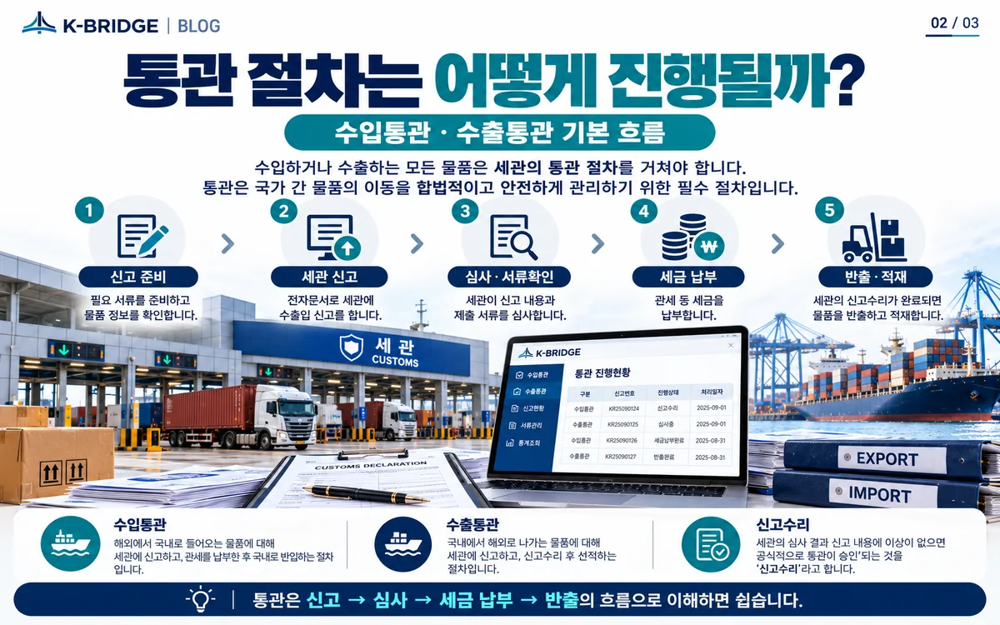
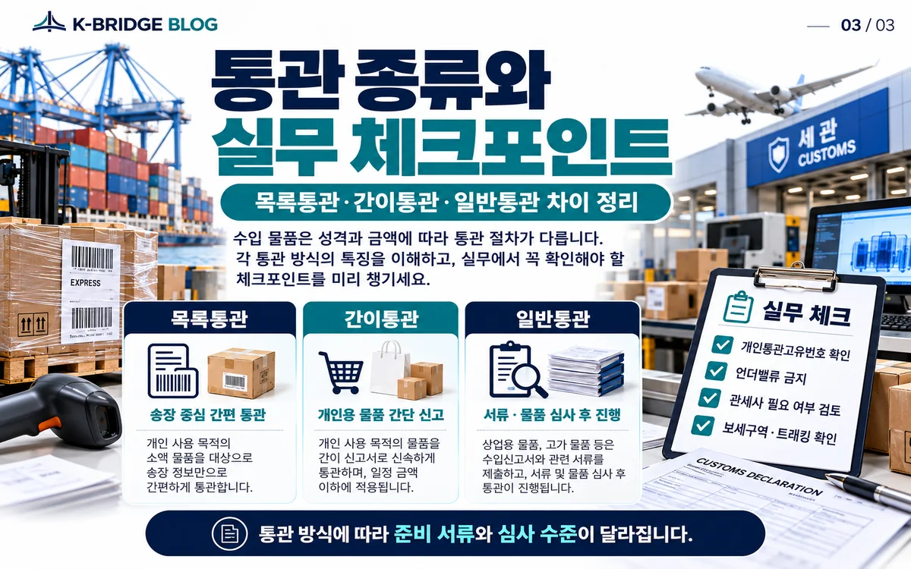

핵심 요약
관세는 수입물품에 부과되는 세금이고, 통관은 수출입 물품을 세관에 신고해 적법 여부를 확인받고 반출·적재까지 진행하는 절차입니다. 실제 관세는 단순히 물품가격에 세율 하나를 곱해서 끝나는 것이 아니라 HS CODE, 과세가격, 적용 관세율, 원산지·FTA 조건을 함께 확인해야 합니다.
1. 관세와 통관, 무엇이 다른가요?
관세(Customs Duty)는 세금이고, 통관(Customs Clearance)은 수출입 화물을 세관 절차에 따라 신고·심사·수리하는 과정입니다.
2026년 8월 11일 시행 관세법은 수입물품을 관세의 과세물건으로 규정하고 있습니다. 통관은 그 세액을 계산하는 일만 뜻하지 않습니다. 품목분류, 수입요건 확인, 과세가격과 원산지 검토, 수입신고, 서류심사 또는 물품검사, 세금 납부, 신고수리와 화물반출까지 이어지는 전체 절차를 말합니다.

2. 관세는 어떻게 결정될까?
실무에서는 ① HS CODE → ② 과세가격 → ③ 적용 관세율 → ④ 원산지·FTA 요건 순으로 확인하면 이해하기 쉽습니다.
HS CODE: 어떤 물품인지 분류
관세율과 수입요건의 출발점입니다. 제품명만으로 정하는 것이 아니라 재질, 기능, 용도, 구성 등을 기준으로 품목을 분류해야 합니다. 분류가 달라지면 세율과 세관장확인 대상 여부가 함께 달라질 수 있습니다.
과세가격: 세금을 계산하는 가격 기준
관세평가의 기본은 우리나라에 수출하기 위해 판매되는 물품의 실제지급가격입니다. 다만 거래조건에 따라 운임·보험료, 포장비용, 생산지원비용, 로열티 등 법령상 가산요소와 공제요소를 검토해야 하므로 Commercial Invoice 금액과 과세가격이 항상 같다고 볼 수는 없습니다.
관세율: 기본세율 하나만 보는 것이 아님
기본·잠정·탄력·협정관세율 등 여러 세율 체계가 있고 적용 우선순위도 있습니다. 특정 품목의 실제 적용세율은 신고 시점의 세율과 해당 물품의 조건을 확인해야 합니다.
원산지·FTA: 낮은 협정세율의 조건 확인
FTA 협정세율을 적용하려면 단순히 수출국이 협정국이라는 사실만으로는 부족합니다. 협정별 원산지 결정기준과 증빙서류, 직접운송 등 적용요건을 확인해야 합니다.
3. 관세율에는 어떤 종류가 있나요?
| 구분 | 의미 | 실무 포인트 |
|---|---|---|
| 기본 관세율 | 관세법 별표 관세율표에 정한 기본세율 | 다른 특별한 세율이 적용되지 않을 때 기준이 됩니다. |
| 잠정 관세율 | 기본세율과 달리 일정 기간 잠정적으로 적용하는 세율 | 품목별 시행 여부와 기간을 확인합니다. |
| 탄력 관세율 | 경제·산업 상황에 대응해 법률 범위에서 탄력적으로 적용 | 덤핑방지·상계·긴급·조정·할당·계절관세 등이 포함될 수 있습니다. |
| 협정 관세율 | FTA 등 조약·협정에 따라 정한 세율 | 원산지 기준과 증빙요건을 충족해야 실제 적용할 수 있습니다. |

4. 수입통관은 어떤 순서로 진행되나요?
일반적인 수입화물은 보세구역 반입 → 요건 확인 → 수입신고 → 세관 심사·검사 → 세금 납부·신고수리 → 반출의 흐름으로 이해하면 됩니다.
- 화물 도착·보세구역 반입: 해외에서 도착한 외국물품은 통관 전 보세구역 등에 장치됩니다.
- 수입요건 사전 확인: 품목에 따라 인증·허가·검역·추천 등 관련 법령의 요건을 갖춰야 할 수 있습니다.
- 수입신고: 관세사 또는 자가통관업체가 UNI-PASS 전자통관시스템을 통해 신고합니다. 관세청 안내에 따르면 도착 전 신고가 가능한 경우도 있습니다.
- 신고서 심사·물품검사: 통관시스템에서 검사·서류제출 대상 여부가 선별되고, 필요하면 서류심사 또는 물품검사가 진행됩니다.
- 세금 납부·신고수리: 사전납부 또는 사후납부 요건에 따라 세금과 담보 등을 확인한 뒤 신고가 수리됩니다.
- 화물 반출: 보세구역은 신고수리 여부를 확인한 뒤 화물을 인도합니다.
따라서 통관 지연은 세관의 검사 자체만이 아니라 HS CODE 불일치, 수입요건 미확인, Invoice·Packing List 정보 차이, 원산지 증빙 부족, 과세가격 보완 같은 사전 준비 문제에서 발생하기도 합니다.
5. 수출통관은 어떻게 다른가요?
수출통관은 수출물품을 세관에 신고하고 신고수리를 받은 뒤 외국무역선이나 항공기에 적재하기까지의 절차입니다. 수출은 일반적으로 관세를 납부하는 과정이 중심이 아니라 수출신고 내용의 정확성, 전략물자·식품·위험물 등 품목별 수출요건, 원산지와 환급 관련 자료 관리가 중요합니다.
- 품명·규격·HS CODE: 실제 제품 사양과 일치하도록 신고합니다.
- 수출요건: 품목별 허가·승인·검사·검역 필요 여부를 확인합니다.
- 신고수리 후 적재: 수출신고 수리와 선적 스케줄을 연결해 적재기한을 관리합니다.
- 서류 보관: Invoice, Packing List, 원산지·거래 증빙 등 사후확인 자료를 관리합니다.
6. 2026년 통관에서 알아둘 변화
2026년에는 전자상거래 통관 정보가 별도 포털로 정비되는 등 디지털 통관 서비스가 계속 확대되고 있습니다.
관세청은 2026년 8월 28일 전자상거래 통관포털을 개설해 개인통관고유부호, 해외직구 통관내역, 화물진행정보, 예상세액 등 관련 서비스를 한곳에서 제공하고 있습니다. 기업의 일반 수입신고는 기존 UNI-PASS 중심으로 진행되므로, B2B 일반화물 통관과 개인 전자상거래 통관을 같은 절차로 이해하지 않는 것이 중요합니다.

7. 수입 전 실무 체크리스트
- HS CODE: 제품의 재질·기능·용도·구성에 맞게 품목분류가 되어 있는지 확인합니다.
- 과세가격: Invoice 가격 외에 운임·보험료·로열티 등 가산요소 검토가 필요한지 확인합니다.
- 원산지·FTA: 협정세율 적용 여부와 원산지증명서 등 증빙요건을 확인합니다.
- 수입요건: 식품, 전기·전자, 화학제품, 의료기기 등 품목별 인증·검역·허가 여부를 확인합니다.
- 서류 일치: Commercial Invoice, Packing List, B/L·AWB의 품명·수량·중량·금액·거래조건이 서로 맞는지 확인합니다.
- 정확한 신고: 실제 거래가격보다 낮게 신고하는 언더밸류나 허위 품목신고를 하지 않습니다.
KEY TAKEAWAYS
이 글에서 기억할 것
- 관세: HS CODE · 과세가격 · 관세율 · 원산지를 함께 확인
- 수입통관: 보세구역 → 신고 → 심사·검사 → 수리 → 반출
- FTA: 낮은 세율보다 원산지 기준과 증빙 충족이 먼저
- 실무: 선적 전에 수입요건과 신고정보를 점검
8. 자주 묻는 질문
Q. 관세와 통관은 어떻게 다른가요?
관세는 수입물품에 부과되는 세금이고, 통관은 수출입 물품을 세관에 신고하고 심사·검사 등 필요한 절차를 거쳐 신고수리 및 반출·적재까지 진행하는 절차를 뜻합니다.
Q. 관세율은 HS CODE만 알면 바로 정해지나요?
HS CODE는 출발점이지만 실제 적용 세율은 기본·잠정·탄력·협정세율의 적용 여부와 원산지, 품목별 조건을 함께 확인해야 합니다. FTA 세율을 적용하려면 해당 협정의 원산지 기준과 증빙요건도 충족해야 합니다.
Q. 과세가격은 인보이스 금액과 같은가요?
항상 같지는 않습니다. 거래가격을 기본으로 하되 법령상 가산·공제 요소를 반영할 수 있습니다. 운임·보험료, 로열티 등 거래조건에 따라 과세가격에 영향을 주는 항목이 있으므로 계약조건과 비용구조를 함께 확인해야 합니다.
Q. 수입신고는 화물이 도착한 뒤에만 가능한가요?
도착 후 신고가 원칙이지만 관세청은 신속한 통관을 위해 일정 요건에서 도착 전 수입신고도 가능하다고 안내하고 있습니다.
Q. 수입신고를 하면 모든 화물이 검사를 받나요?
아닙니다. 통관시스템에서 검사대상과 서류제출대상 여부가 선별되며, 신고내용과 위험도 등에 따라 전산심사·서류심사·물품검사 경로가 달라질 수 있습니다.
Q. 언더밸류는 왜 위험한가요?
실제 거래가격보다 낮은 금액을 신고해 세액에 영향을 주는 행위는 관세법상 제재 대상이 될 수 있습니다. 가격·품목·수량·원산지 등 신고정보는 실제 거래와 일치하도록 정확히 관리해야 합니다.
NEXT STEP
이 글과 함께 보면 좋은 자료
관세·통관 조건을 선적 전에 함께 확인하세요
KBRIDGE는 해상·항공 국제운송과 통관, 창고, 국내운송을 연결해 HS CODE·수입요건·운송조건을 함께 검토합니다. 통관 과정에서 예상하지 못한 지연과 추가비용을 줄이려면 선적 전 확인이 중요합니다.